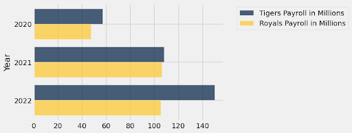
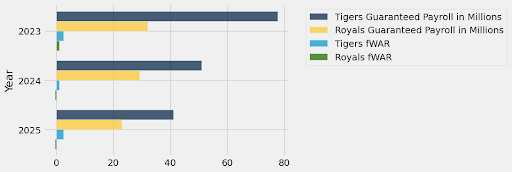
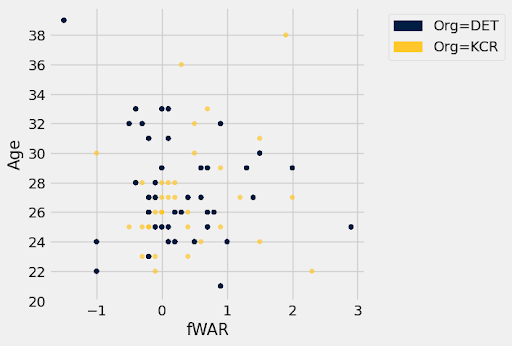
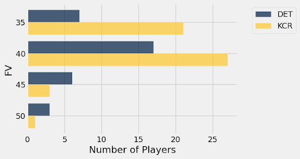

Who is Better Positioned for Success in Their New Role: Scott Harris or J.J. Picollo?
By Jacob Siegel | November 11, 2022
 2022 was a rough year for both the Detroit Tigers and Kansas City Royals. The Tigers finished 66-96, with the Royals one game worse at 65-97. For two young teams trying to hang around .500, winning percentages below .410 did not cut it for either ownership group. Because of the disappointment, both teams let go of their long-tenured heads of baseball operations, Al Avila in Detroit after more than 7 years and upwards of 20 years in the front office dating back to 2002 as an assistant GM, and Dayton Moore in Kansas City, the GM there since 2006. These were momentous moves for two teams hoping to emerge from rebuilds quickly but have not done so yet. They took different approaches to hiring, as Kansas City immediately hired J.J. Picollo, whilst the Tigers put on a national search, ultimately landing on Scott Harris, poaching him from San Francisco. However, Harris is going into a stable managerial situation with A.J. Hinch, whilst Picollo led a search for a new manager, resulting in Matt Quatraro taking the helm. Ultimately, Scott Harris and J.J. Picollo are stepping into similar roles, taking over for tenured executives to lead struggling franchises both with hope for the future. That begs the question: which new executive is better set up to succeed?
2022 was a rough year for both the Detroit Tigers and Kansas City Royals. The Tigers finished 66-96, with the Royals one game worse at 65-97. For two young teams trying to hang around .500, winning percentages below .410 did not cut it for either ownership group. Because of the disappointment, both teams let go of their long-tenured heads of baseball operations, Al Avila in Detroit after more than 7 years and upwards of 20 years in the front office dating back to 2002 as an assistant GM, and Dayton Moore in Kansas City, the GM there since 2006. These were momentous moves for two teams hoping to emerge from rebuilds quickly but have not done so yet. They took different approaches to hiring, as Kansas City immediately hired J.J. Picollo, whilst the Tigers put on a national search, ultimately landing on Scott Harris, poaching him from San Francisco. However, Harris is going into a stable managerial situation with A.J. Hinch, whilst Picollo led a search for a new manager, resulting in Matt Quatraro taking the helm. Ultimately, Scott Harris and J.J. Picollo are stepping into similar roles, taking over for tenured executives to lead struggling franchises both with hope for the future. That begs the question: which new executive is better set up to succeed? FINANCIALS
One of the biggest indicators of team success is payroll. Different teams are in different-sized markets and with owners more and less likely to spend money. Although it is not a hard and fast rule, the teams that spend the most often have the best teams and the most sustained success. According to the Nielsen ratings of TV market size, the Kansas City market is just about half the size of the Detroit market. The Royals were just purchased in 2020 by John Sherman and the Tigers are owned by Chris Ilitch, who also owns the Detroit Red Wings. Looking back on the past few years, the two teams spent similarly on payroll (the Tigers did spend a bit more), but this past year the Tigers went on a shopping spree and returned with Javier Báez and Eduardo Rodriguez, spiking their payroll and showing a willingness to spend.
 However, the Tigers spending last year means they have more money guaranteed to players in the coming years. Even if Miguel Cabrera’s option is declined for 2024, he is still owed an $8 million buyout, and the Báez and Rodriguez contracts are substantial for production, assuming they both opt in to the second part of their deals, that, in year one of the deals, did not match that. For the Royals, they owe much less money, but it is owed to Salvador Perez, an aging catcher, and Hunter Dozier, who was worth negative fWAR in 2022.

A FanGraphs study found that teams pay somewhere around $8m per WAR, so both teams are projected to be ‘overpaying’ the next few years. One would assume that the Tigers have more assured quality in the next 3 years in terms of players post-arbitration and renewable contracts, while the Royals have more flexibility, although that is up to how much their owners are willing to spend.
ROSTER BREAKDOWN
On the field, the thing that Harris and Picollo are most looking for is young players who have proven they are Major League caliber. Both teams have had an influx of youth in the past few years, with some successes but not as many as their fans would have hoped.
 Both teams have way too many players who provided negative fWAR, but also have a few young players who had promising seasons. For the Tigers, 25-year-old Tarik Skubal put up almost 3 fWAR. He became only the 11th lefty to have 2.9 or more fWAR in the age 25 or younger season since 2016. He may not be a bonafide ace, but he is someone that the Tigers can confidently send out there every five days and expect to be a quality pitcher, especially as he may be entering his prime years. The Tigers' best young player is probably Riley Greene, who put up almost 1 fWAR in fewer than 100 games. He is very clearly raw and will need to improve his .253/.321/.362 line to be a true offensive weapon, but putting up a 98 wRC+, nearly league average, as an athletic 21-year-old should give serious hope he could blossom into a stalwart in CF. Among veterans, Javier Báez had another solid season, maybe not enough to justify his contract but he was still good on the field. In players like Jeimer Candelario, Jonathan Schoop, and Willi Castro, the Tigers have a few role players who can hopefully hit enough to be productive utility bench bats, but likely nothing more than that. One of the biggest wild cards is Spencer Torkelson, the 1st overall pick in 2020 who came up this year, had -1.0 fWAR and was demoted. His exit velocity numbers were above average and his plate discipline around average, so he still has the upside to be a quality starting first baseman, the question is if and when that happens. In the rotation, the three-headed monster coming up the pipeline of Skubal, Matt Manning, and Casey Mize has not come to fruition. Both Skubal and Mize recently had surgery, with Mize likely out the whole 2023 season, and the results from Manning and Mize have been run-of-the-mill anyways. There is still some upside with the rotation if those three become healthy and improved, as one might expect young pitchers to do with time on the mound, and if Spencer Turnbull can have a successful recovery from Tommy John and return to being an impact pitcher. Ultimately, the Tigers have some solid young pieces. Greene and Skubal have proven to be good Major League players and may be able to blossom into stars, and there is prospect pedigree with Torkelson, Manning, and Mize, that could become something. However, the team will need much more and it is unlikely that a core with Báez as the premier player will contend. Joe Jimenez had 1.4 fWAR for the Tigers out of the bullpen, but he is only under contract for one more season and may be traded at the deadline.
For the Royals, their headliner is Bobby Witt Jr. He was the second pick in the 2019 draft out of high school, with only generational catching prospect Adley Rutschman going ahead of him. Witt lived up to some of the hype in 2022, having 2.3 fWAR. His wRC+ was basically league average, but with 20 HRs and 30 SBs, he is an electric player that should put butts in seats at Kauffman Stadium and clearly has the athletic talent to be a star. The best hitter for the Royals in recent years has been Salvador Perez, but he is an aging catcher. He may still be able to hit, as his wRC+ was 108 this year, but he may have to move to DH full-time soon, as he has been inching that way the past few years. The Royals also have a plethora of under-25-year-old bats who are just reaching the majors, including Drew Waters, MJ Melendez, Nick Pratto, Michael Massey, and Vinnie Pasquantino. Even if each of these players is just a coin flip to hit, the odds are that at least one of them will become a quality major leaguer, if not multiple. Pasquantino is just a 1B/DH, but he hits the ball hard and put up a 137 wRC+, which plays even if there is zero or negative defensive value. Another interesting player is Nate Eaton, a 25-year-old from Virginia Military Institute who did not hit very well but has a top 3 percent sprint speed and the strongest arm in the majors according to Baseball Savant. As a defensive-minded athlete, he could turn into something as a 21st-round pick. On the pitching side, their best starter is Brady Singer, who, like Skubal, was 25 for most of the 2022 season and put up 2.9 fWAR. A highly touted arm out of the University of Florida, he struggled for a bit in the majors before it started clicking this year. Behind that, there are some interesting young arms such as Jackson Kowar and Kris Bubic, but neither of them has had very much success at the major league level. Joe Jimenez had 1.4 fWAR for the Tigers out of the bullpen, but he is only under contract for one more season and may be traded at the deadline. The Royals have some upside relievers like Josh Staumont and Scott Barlow, but relief pitching is so volatile that it is hard to predict what the Royals bullpen will look like the next time they are competitive.
FARM BREAKDOWN
Because neither the Royals nor Tigers truly have World Series aspirations in 2023, a big part of their outlook is their farm system. Both teams have had a lot of impact players graduate from prospect status in the last few years, so the systems are a little depleted. According to MLB Pipeline, the farm systems are ranked right next to each other, with the Tigers at 22 and the Royals at 21. When looking at the updated FanGraphs Board, the Tigers may have better top-end prospects than the Royals, but the Royals have better prospect depth. When sorting by Future Value (45+ is classified as 45 for the sake of this data, and 35 is only players with FV 35+), that is apparent.

This shows the depth of the Royals’ system especially well. They have a plethora of players with 40 or 40+ FV, projected by FanGraphs to be bench players or backend starters. This may not seem like much, but building organizational depth matters a lot because the “next man up” mentality will be able to come to fruition as when players get hurt or do not perform well, there is someone there to replace them. Among higher-end prospects, the Royals’ sole FV 50 player is Maikel Garcia, a SS who debuted in 2022, going 7-22 with a double. A left side of the infield with him and Witt Jr. could be a good foundation for the Royals. As for the Tigers, there is little prospect depth there, as they have fewer 35, 40, and 40+ prospects combined than the Royals do 40 and 40+. None of their higher-end prospects are truly elite, as Jackson Jobe, their highest-ranked, was just 58th on FanGraphs’ updated board. However, with Jobe, Ty Madden, Joey Wentz, and Reese Olson, the latter three being FV 45, there is hope for a quality future rotation when combined with the current Skubal, Manning, and Mize when healthy. On the hitting side, the Tigers have a handful of guys with FV above 45, including two top-50 draft picks from this year, but none of them have an at-bat above AA, so they are more high variance and likely won’t play a big role, if any role, in 2023.
CONCLUSION
Ultimately, neither the Royals nor the Tigers are in a position to compete in 2023. They both have young players whom they are counting on to take strides forward, but if they do then both teams could open competitive windows come 2024, and with Riley Greene and Bobby Witt Jr., there is serious hope for offensive stars in the coming years. Because the two teams are in such similar positions given their nearly identical 2022 records, changes in baseball leadership, and that they are both in the same mediocre division, they are interesting to compare against each other. Although the Tigers have the most proven talent in Javier Báez and probably the best pitcher in Tarik Skubal, I still believe that the Royals and J.J. Picollo are better set up for success. The Royals have substantially more prospect depth, less money on the books, and Bobby Witt Jr., whom I truly believe has a chance to become an upper-echelon player. If he does that, the Royals use their prospect depth in trades to supplement their Major League team, and potentially hit on a prospect or two, they will be well set up to spend on a free agent or two as the finishing pieces to a contender, especially if some of the players who debuted in 2022 can hit.